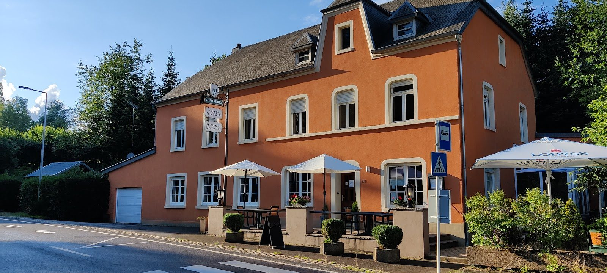
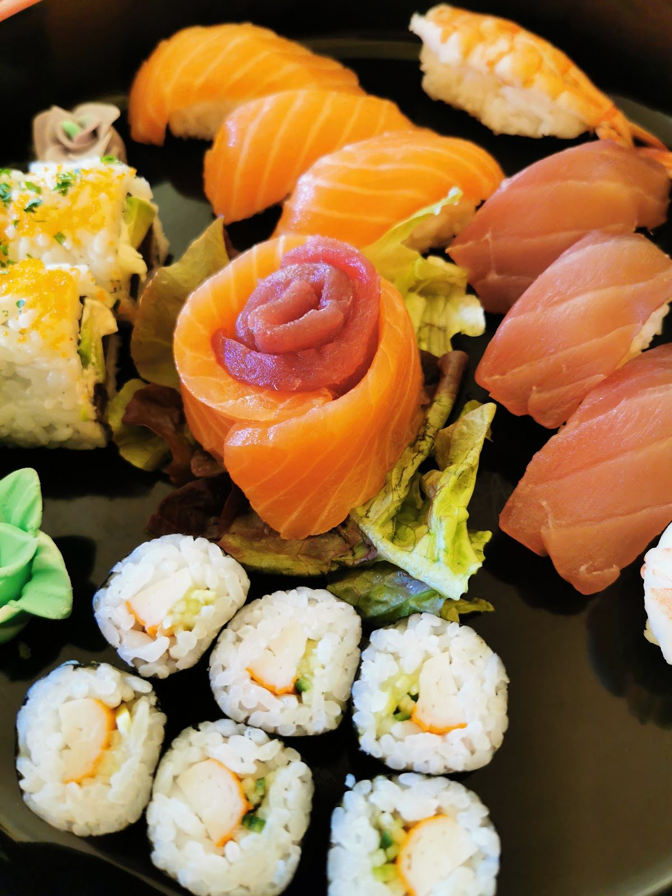
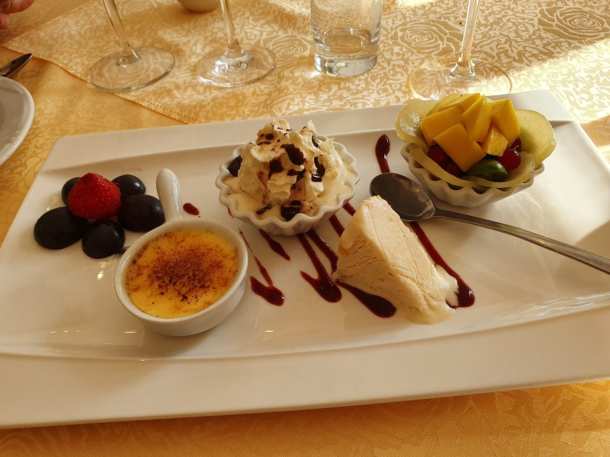
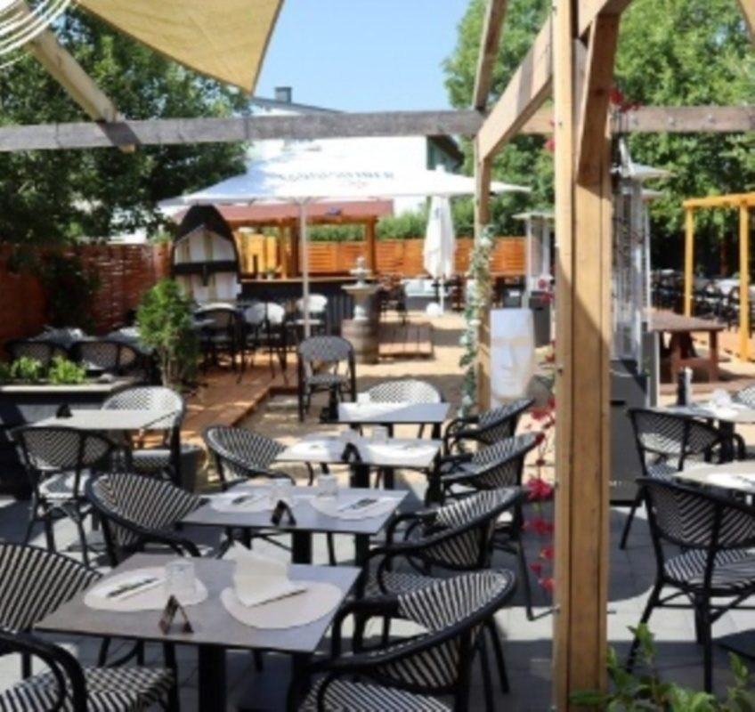
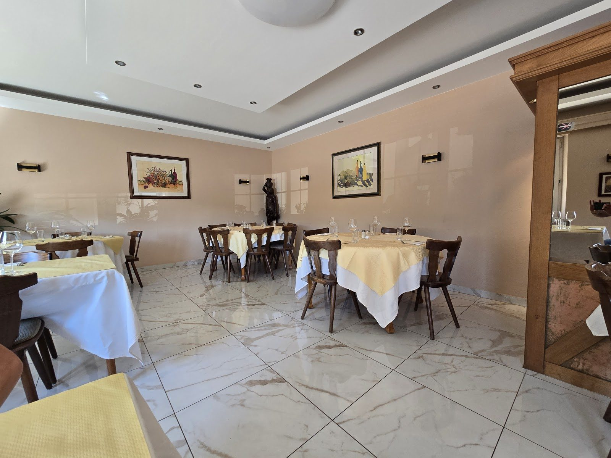
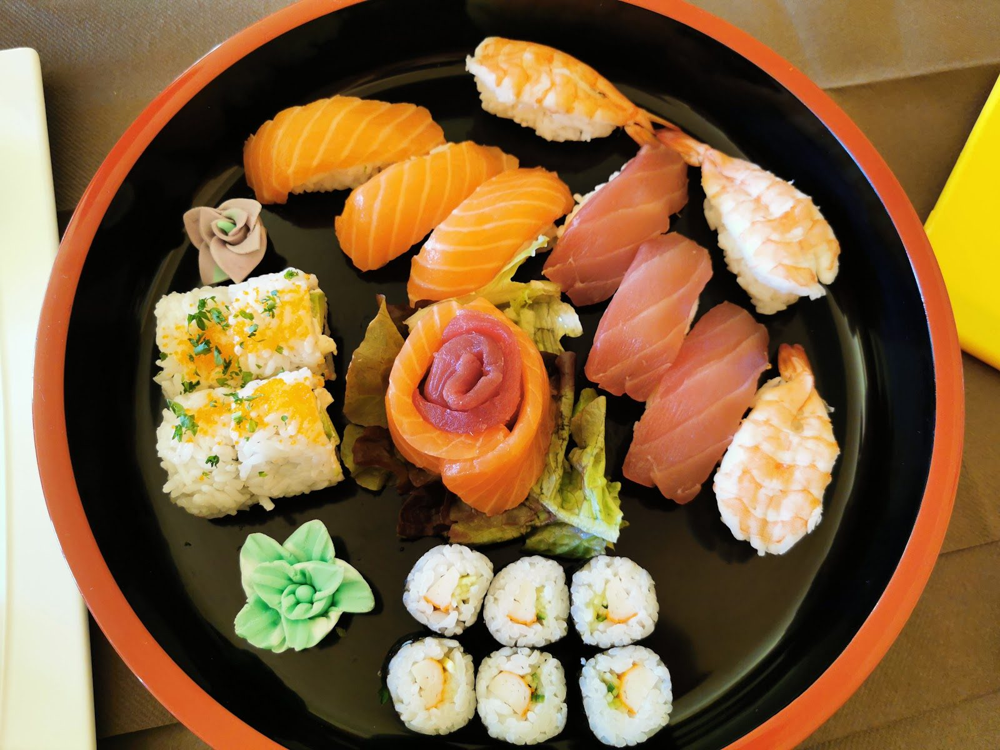
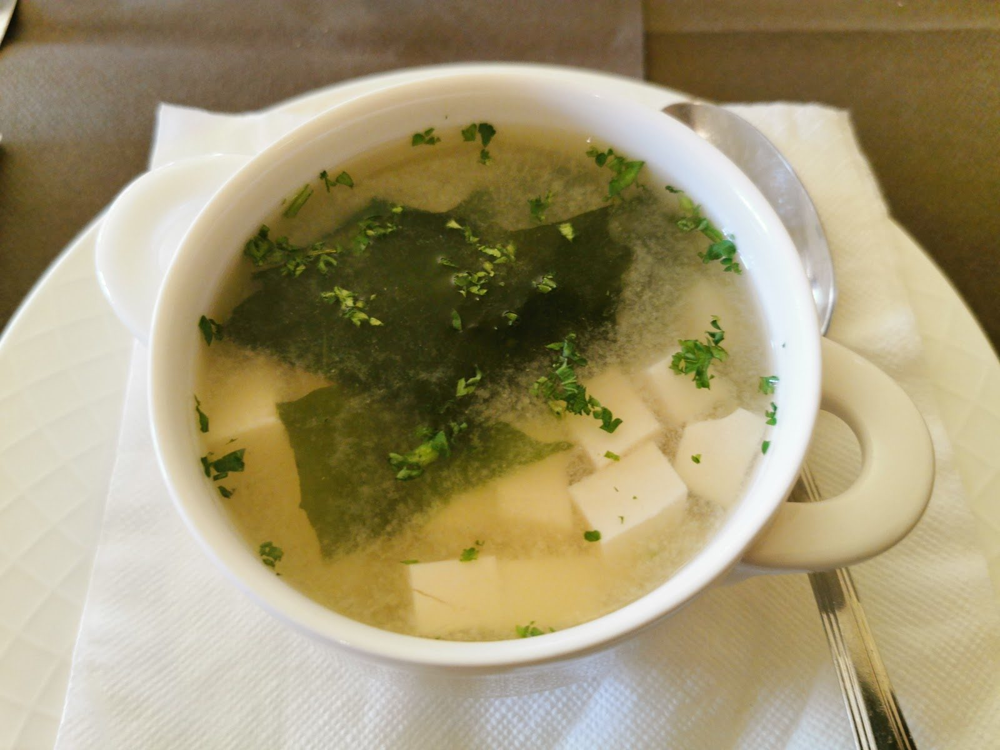
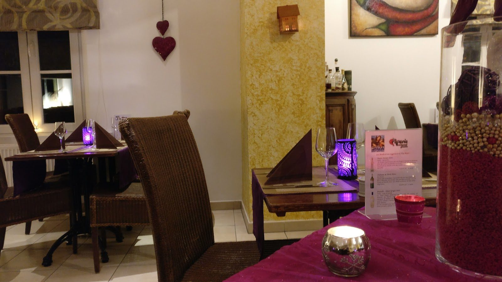

Auberge Roudbaachtoutes les envies, une seule adresse
Sushi et maki, classiques français, pâtes et desserts maison — servis dans une maison de village, la terrasse au soleil.
Une auberge de campagne à Préizerdaul où une même cuisine fait le sushi, le plat mijoté et les pâtes — honnête, sans chichi, généreuse.
Une cuisine, quatre envies
On ne choisit pas son camp : la même maison roule le maki, nappe l'escalope de sa sauce forestière, tourne les tagliatelles et dresse le dessert. Voilà ce qu'on aime.

Sushi & maki
Nigiri, maki, California, sashimi, temaki : la ligne japonaise, roulée et tranchée à la commande — sur place ou à emporter.

Les classiques
Escalope de veau ou de porc, sauce forestière aux champignons, grillades et brochettes — la cuisine française et luxembourgeoise, généreuse.

Les pâtes
Tagliatelles carbonara, ou aux légumes de saison émincés minute — simples, chaudes, réconfortantes.

Les desserts
Crème brûlée, assiette gourmande, fruits frais et fromage — la fin heureuse d'un repas de campagne.
Le soleil traversela campagne.
Une grande terrasse abritée par la pergola et les voiles d'ombrage, des tables espacées, la campagne de Préizerdaul autour. On y prend son temps du déjeuner jusqu'au soir.
Quand la lumière tourne à l'or en fin de journée, c'est l'adresse où l'on s'attarde — un verre, une planche de sushi, un plat qui mijote.

Au grand airDe la salle à l'assiette
La salle à nappes blanches, la lumière du soir, et une table qui va du plateau de sushi au bol de soupe. Une auberge, tout simplement.






Ce qu'on sert
Les familles de plats d'après la carte de la maison. Les prix ne sont pas repris ici — carte & prix à confirmer sur place.
Sushi, maki & sashimi
À l'asiatique
Classiques & pâtes
Desserts maison
Familles de plats d'après les photos et la carte publiques de la maison, à titre indicatif. Aucun prix n'est publié ici : la carte et les prix sont à confirmer sur place.
Nous trouver
L-8558 Platen (Préizerdaul)
horaires complets à confirmer